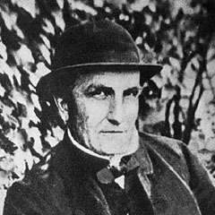
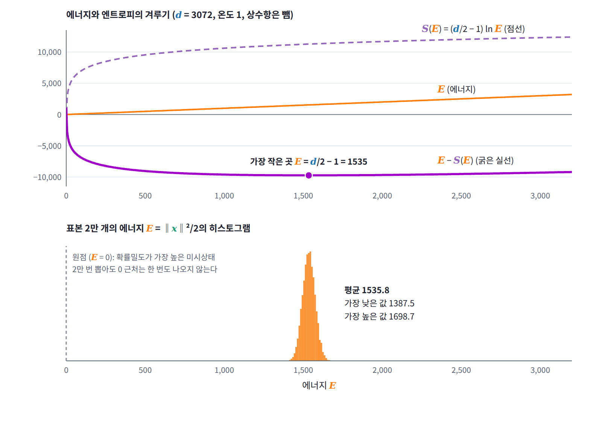

등분배 정리: 제곱 항마다 같은 몫
지금까지의 상태는 하나씩 셀 수 있었다. 변수가 실수 전체를 끊김 없이 움직이는 계에서는 평균 에너지가 얼마일까? 에너지에 제곱으로 들어가는 변수 하나는 온도 T에서 에너지를 얼마나 받고, 그 몫은 제곱 항의 계수가 클수록 커질까?
역사: 워터스턴의 묻힌 논문과 켈빈의 구름
등분배 정리가 걸어온 길은 순탄하지 않았다. 스코틀랜드의 공학자 워터스턴은 1845년, 섞인 기체에서 무거운 분자와 가벼운 분자의 평균 운동에너지가 같다는 내용을 담은 논문을 왕립학회에 보냈다. 심사위원은 「이 논문은 헛소리일 뿐」이라는 평을 남겼다고 전해진다. 논문은 문서고에 묻혔다가 워터스턴이 세상을 떠난 뒤인 1892년에야 레일리가 찾아내 출간했다. 그사이 맥스웰과 볼츠만은 같은 결론을 일반화해 에너지에 제곱으로 들어가는 변수 하나마다 평균 에너지가 ½kT씩 돌아간다는 등분배 정리를 세웠는데, 이 정리로 기체의 비열(물질 1g의 온도를 1도 올리는 데 드는 열, specific heat)을 계산하면 측정값과 맞지 않았다. 분자가 진동할 수 있다면 진동의 몫까지 비열에 더해져야 하는데 실제 비열은 그보다 작았던 것이다. 켈빈은 1900년 4월 강연에서 이 어긋남을 1800년대 물리학의 하늘에 남은 두 구름 가운데 하나로 꼽았고, 이 구름은 에너지가 덩어리로만 오가는 양자역학이 나온 뒤에야 걷혔다. 등분배 정리가 언제 맞고 언제 틀리는지는 아래 문제 3에서 직접 따져 본다.

제곱 항 하나의 평균 에너지
ln Z를 β로 미분하면 평균 에너지가 나온다는 사실을 가장 단순한 연속 계에 써 보자. 에너지가 한 변수의 제곱에 비례하는 E = ax²/2이고 x가 실수 전체를 움직일 수 있다면, 분배함수는 가우스 적분이다.
계수 a는 ln Z에 β와 상관없는 상수 −½ ln a로만 들어가므로 미분하면 사라진다. 그래서 제곱 항 하나가 받는 평균 에너지는 그 계수와 상관없이 ½kT다. 에너지가 제곱 항 f개의 합이면 Z가 곱으로 쪼개지고 ln Z가 합이 되므로 평균 에너지는 f × ½kT가 된다. 이것이 등분배 정리 (제곱 항마다 같은 몫, equipartition theorem)다. 그네 하나는 운동량과 위치의 제곱 항이 둘이라 kT를, 이상기체(ideal gas, 원자끼리 힘을 주고받지 않는 기체) 원자 하나는 운동량 세 성분의 제곱 항이 셋이라 (3/2)kT를 갖는다. 다만 이 계산은 두 가지를 가정했다. 에너지가 변수의 제곱이라는 것과, 그 변수가 끊김 없이 실수 전체를 움직인다는 것이다. 어느 하나라도 깨지면 몫이 달라지는데, 그것은 문제 3에서 따져 본다.
ML에서: 가우시안 노이즈의 에너지는 d/2 근처에 있다
이제 d차원 표준정규분포 N(0, I)를 에너지 E = ‖x‖²/2, 온도 1인 볼츠만 분포로 보자. 에너지는 제곱 항 d개의 합이므로 평균 에너지는 정확히 d/2다. 자유에너지의 겨루기로 보아도 같은 곳이 나온다. 에너지가 E 근처인 상태들은 반지름 √(2E)인 구면의 얇은 껍질을 이루고, 그 부피는 E^(d/2 − 1)에 비례한다.
d = 3072라면 겨루기의 승자는 1535, 평균은 1536이고, 실제로 샘플 2만 개를 뽑으면 에너지의 평균은 1535.8, 가장 낮은 것조차 1387.5다. 확률밀도가 가장 높은 원점은 미시상태 하나로서는 누구보다 흔하지만, 에너지가 d/2 근처인 상태들의 엄청난 수에 밀려 한 번도 뽑히지 않는다.

문제 3. 딱딱한 용수철과 무른 용수철
온도 T인 열원에 두 용수철이 맞닿아 있다. 하나의 위치에너지는 x²/2, 다른 하나는 100x²/2이다. (가) 각각의 평균 위치에너지를 구하라. (나) 위치에너지가 |x|이거나 x⁴이면 어떻게 되는가? (다) 에너지 0과 ε만 가질 수 있는 2준위 입자에서 βε = 10이면?

딱딱한 용수철은 조금만 늘어나도 에너지가 100배니까 평균 에너지도 훨씬 크겠죠. numpy로 T = 1에서 백만 개씩 뽑아 볼게요. x는 분산이 T/a인 정규분포니까… 무른 쪽이 0.5015, 딱딱한 쪽이 0.4999. 어? 똑같아요.

딱딱한 쪽은 x의 표준편차가 0.1로 10배 좁아서 x²가 100분의 1이야. 계수가 100배 커진 걸 정확히 상쇄하는 거지.

ln Z로도 확인해 봐요.

Z = √(2π/(βa))니까 ln Z = −½ ln β − ½ ln a + (상수)예요. β로 미분하면 a는 사라지고 ⟨E⟩ = 1/(2β) = ½kT. 제가 추측한 「제곱 항 하나에 ½kT」가 맞았어요!

추측 자체는 맞았어요. 숙제는 그게 언제 맞느냐였죠. (나)로 가 봐요.

|x|면 Z = ∫e^(−β|x|)dx = 2/β라서 ln Z = −ln β + (상수)이고 ⟨E⟩ = kT예요. x⁴면 x = β^(−1/4)u로 바꾸면 Z가 β^(−1/4)에 비례하니까 ⟨E⟩ = kT/4고요. 일반적으로 |x|ⁿ이면 kT/n이에요. ½은 지수 2에서 나온 숫자였네요.

(다)는 ⟨E⟩ = ε/(e^(βε) + 1)이니까 βε = 10이면 4.5 × 10⁻⁵ε, kT로 바꾸면 4.5 × 10⁻⁴kT예요. ½kT의 천분의 일도 안 되는데요?

2준위는 변수가 연속이 아니잖아. 에너지가 한 덩어리 단위로만 오가는데 그 덩어리가 kT의 10배면 거의 들뜨지를 못하는 거야.

켈빈이 말한 두 번째 구름이 바로 그거예요. 분자의 진동은 제곱 항이 두 개라서 등분배대로라면 kT를 받아야 해요. 그런데 양자역학에서는 진동 에너지도 덩어리로만 오가고, 실온에서는 그 덩어리가 kT보다 훨씬 커요. 그래서 진동은 거의 얼어붙어 비열에 끼지 못했던 거죠. 등분배는 에너지가 제곱 항이고, 그 변수가 kT에 비해 촘촘하게, 곧 연속으로 움직일 수 있을 때만 맞아요.

그럼 d차원 가우시안 노이즈는 좌표마다 제곱 항이 하나씩이니까 좌표마다 ½씩, 합쳐서 d/2요. 샘플 에너지가 d/2 근처에 있던 게 등분배였네요.

너 추측 맞았다고 너무 좋아하지 마. 조건은 절반밖에 안 맞혔어.